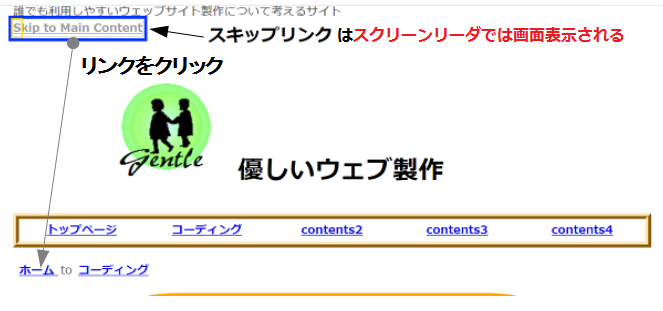

誰でも見れるようにするためのhtmlコーディング実例
画像・図表には代替テキストを入れる。
代替テキスト「alt」属性を入れる。
html
<p><img src="./img/_17531bluebottle.png" alt="幸せを呼ぶブルーボトル" title="幸せを呼ぶブルーボトル"></p>alt属性に画像内容をテキストとして示すことにより、画像が表示されなかった場合の代替表示をします。音声認識ソフトでは、alt属性の内容が発音されます。title属性はツールチップ（カーソルを近づけたときのtitleの内容が表示される。）として機能します。
アイコンや罫線などデザイン目的の画像にはスクリーンリーダへの適切な配慮をする。
下記の画像はアクセントデザイン目的で使用しています。
ページ内で何回も使われるアイコンはcssファイル内で擬似要素として定義します。
アクセントデザイン目的の画像の代替テキストは、alt=""とします。
html
<p class="mark1">下記の画像はアクセントデザイン目的で使用しています。</p>
<p><img src="img/accent1.png" alt=""></p>
css
.mark1::before {
content: url("../img/mark1.png");
}デザイン目的だけの画像、たとえば、アイコンや区切り画像などはalt title属性にコメントを入れる必要はありません。
但し、alt属性は省略すべきではありません。スクリーンリーダがalt属性がない場合にはファイル名を読み上げてしまうことがあり、聞き心地を損ねてしまうからとされております。。
タグで適切な論理構造として示し、スタイルシートで装飾をする。
強調を示すタグ は下記のものがあります。
b 単なる太字テキスト表示
em 強調であることを示す
strong 重要であることを示す
これらのタグは見た目は同じような表示になることが多いですが、タグの役割を理解した上で 使用することが望まれます。表示装飾の差別化は、スタイルシートを使って示します。
タグの適切な使用により、スクリーンリーダでの理解しやすい音声発信につながると期待されます
<!-- 推奨 -->
html
<p><em>強調を示すタグ</em>は下記のものがあります。</p>
<ul>
<li> <b>b</b> 単なる太字テキスト表示</li>
<li> <b>em</b> 強調であることを示す</li>
<li> <b>strong</b> 重要であることを示す</li>
</ul>
<p>これらのタグは見た目は同じような表示になることが多いですが、<strong>タグの役割を理解した上で</strong>使用することが望まれます。<em>表示装飾の差別化は、スタイルシートを使って示します。</em></p>
css
em { /* 強調表示 */
font-style: normal;
font-weight: bold;
}
strong { /* 重要表示 */
font-weight: bold;
text-decoration: underline;
color: Red;
background: white
}
<!-- 非推奨 -->
html
<p><b>強調を示すタグ</b>は下記のものがあります。</p>
<div>
<p> ・ <b>b</b> 単なる太字テキスト表示<br>
・ <b>em</b> 強調であることを示す<br>
・ <b>strong</b> 重要であることを示す
</p>
<p>これらのタグは見た目は同じような表示になることが多いですが、<b class="_important">タグの役割を理解した上で</b>使用することが望まれます。<b>表示装飾の差別化は、スタイルシートを使って示します。</b></p>
css
._important {
font-weight: bold;
text-decoration: underline;
color: Red;
background: white
}これ以外にもsmallタグ著作権表示 や、kbdタグ（Backspace ）などhtml文の表示目的を表すタグの適切使用により、アクセスビリティ向上に期待が持てるようになります。
リンクであること、リンク先がどこであるか明確に示す。
優しい情報サイト
リンク装飾はデフォルト（アンダーラインつき青色文字色）にし、リンク先の名称を示す
html
<p><a href="https://yasashii.net/wp4/">優しい情報サイト</a></p>
css
a:link {
font-weight: bold;/*太字*/
}
a:visited { /* すでに見たリンク */
color: #999;
background: #fff;
}
a:hover { /* マウスポインターが乗った */
color: #ff6600;
background: #fff;
text-decoration: none;
font-weight: bold;/*太字*/
}
a:active { /* クリックした時 */
color: #ff6600;
background: #fff;
}リンク先がどういうところなのかを明確に示す必要があります。
リンク動作にかかわる擬似要素も必要に応じて指定する。但し、記述の順番は上記のように記述しないとスjタイルがうまく適用されない場合があります。
リンクはユーザがマウスを近づける、クリックする、などの動作を伴います。
このような動作にたいして、表示画面に変化を加えることは、「気づき」という点では有用なものと思われます。
リンクのクリック先を新しいウィンドウにすることを避ける。
優しい情報サイト
リンクをクリックしてしまうと新しいタブまたは新しいウィンドウが開いてしまう。
html
<!-- 非推奨 -->
<a href="https://yasashii.net/wp4/" target="_blank">優しい情報サイト</a>目が見えない人にとっては、新しいウィンドウが開いても気づかない場合があります。なるべくリンクのブランク属性は避ける必要があります
適切なテキスト表現をする。
文字色設定は、文字背景色設定とセットで行います。
ブラウザの文字色、あるいは背景色のデフォルト設定がそれぞれ白、黒とは限らないので、文字そのもののコントラスト比を大きく保つように文字色と文字背景色はセットで設定します。
html
<p class="yellow-black">ブラウザの文字色、あるいは背景色のデフォルト設定がそれぞれ白、黒とは限らないので、文字そのもののコントラスト比を大きく保つように文字色と文字背景色はセットで設定します。
</p>
css
.yellow-black {
color: Black;
background: Yellow;
}
文字列の中の記号文字表記（- / :）が音声としてどのように読まれるのか考えて使用する。
2020-11-11 10:22 <!-- 非推奨表記 -->
2020年11月11日10時22分 <!-- 推奨表記 -->
- / : はスクリーンリーダでは、マイナス スラッシュ コロンと読まれ、意味がわからなくなる。
<time datetime="2020-11-11">2020-11-11 10:22</time> <!-- 非推奨表記 -->
<time datetime="2020-11-11">2020年11月11日10時22分</time> <!-- 推奨表記 -->単語・文の区切りは明確にする。
住 所 : 東京都足立区<!-- 非推奨表記 -->
住所 : 東京都足立区<!-- 推奨表記 -->
単語の文字の間に体裁を整える為に空白文字を入れてはいけない。この場合は、スタイルシートでスタイリングする
<!-- 非推奨 -->
html
<p>住 所 : 東京都足立区</p>
<!-- 推奨 -->
html
<p><span class="l-space1">住所</span>: 東京都足立区</p>
css
.l-space1 {
letter-spacing: 1em;
}機種依存文字はテキストエンコーディングutf-8で使用する。
旧態のブラウザではShift_jisやEUC-JPなどの文字コードが標準で設定されていました。このような状況の下ではブラウザの違いによって機種依存文字（①、Ⅰ、∑など）は見え方が異なってしまうことになり、アクセスビリティを考えると使用すべきではないとされていました。今では、こうした問題も、国際化対応のユニコードutf-8が標準で使われており、考慮しないで済むようになっています。但し、文字化けしてしまうとか、イメージと違う表示になってしまうなどの問題がでてきた場合は、文字コードの設定を疑ってみる必要があります。
点滅・移動させるような表示の仕方はしない。
携帯サイトでよく使われていた、文字を点滅させるBLINKタグと文字を移動させるMARQUEEタグは対応機種が限られており、使うべきではないとされております。視覚障害の人には、このようなタグが使われている画面を読み取ることが困難であったり、音声読み上げされません。html5においても、廃止タグとなっております。
テーブル文の構成は先頭から順番に内容が通じるように作る。
お米の品種について？その長所と短所
品種名 長所 短所
こしひかり 食味が良い 倒伏しやすく栽培がむずかしい あきたこまち こしひかりより栽培期間が短い 炊飯後時間がたつと食味がおちる
2020年度見解
左から右に、上から下にテキストが読まれ、意味が通じるようにする。
html
<table>
<caption>
<strong>お米の品種について？その長所と短所</strong>
</caption>
<thead>
<tr><th>品種名</th><th>長所</th><th>短所</th></tr>
</thead>
<tbody>
<tr><th>こしひかり</th><td>食味が良い</td><td>倒伏しやすく栽培がむずかしい</td></tr>
<tr><th>あきたこまち</th><td>こしひかりより栽培期間が短い</td><td>炊飯後時間がたつと食味がおちる</td></tr>
</tbody>
<tfoot>
<tr><td colspan="3">2020年度見解</td></tr
</tfoot>
</table>テーブルにcaptionをつけると、スクリーンリーダーが読み上げてくれます。
障害者にも使いやすい送信フォームになっている
フォーム送信 を参照してください
障害を持っている人に対する色使いへの配慮をする。
テキスト（前景）と背景色の組み合わせのコントラストは、色覚異常者にとっては、アクセスビリティの重要な要素になっています。各色の組み合わせのコントラスト比が高いほど、みえやすくなります。赤色と緑色の場合は特に注意が必要です。色覚異常者は特に、この色が見えにくい人が多いです。
道標や情報を色だけに頼らないようにすることです。 これは、色が見えない人には良くないでしょう。 例えば、必須のフォームフィールドを赤でマークする代わりに、赤いアスタリスクでマークします。
ナビゲーションを読み飛ばす為のリンク（スキップリンクス）について考える

ナビゲーションがページの先頭にある場合、スクリーンリーダでは、ナビゲーションを読み上げてから本文に進む構成になっていると思われます。
下層ページそれぞれに同じ内容のナビゲーションが使われているのが一般的であり、サイト内を移動するたびごとに、長々と同じ音声アナウンスを聞くことになります。
スクリーンリーダー利用者に対してこのような煩わしさを取り除く為に、「スキップリンクスSkiplinks」というWebアクセシビリティのテクニックが使われる場合があります。これは、以下の条件を満たすようなhtml・cssコーディングによって実現するとされております。
html bodyの先頭部分にリンク元となる「a href」タグを設置する。
リンク先はナビゲーション部分を飛び越え、本文の始まり部分の任意のタグ内に、リンク元に紐づけられたid要素を設置する。
リンク元をdivタグで囲み、id属性をつける。
リンク元を指す、id属性に対してスタイルシートを記述する。但し、スクリーンリーダにはその存在が認識できても、それを必要としないページ閲覧者には見えないcssコーディング設定をしなければならない。
具体的には、display:noneやvisibility:hiddenでは読み上げの対象とはされていないので使うべきではないが、display: absoluteとleft: -10000pxで画面の外に吐き出す設定により、スクリーンリーダーが認識してくれるようである。
ページの先頭付近にスキップリンクを設置します
html
<!-- ヘッダ -->
<header class="h-container">
<p id="site-intro">誰でも利用しやすいウェッブサイト製作について考えるサイト</p>
<div id="skip"><a href="#content">Skip to Main Content</a></div>
<!-- ナビゲーション -->
<div class="breadcrumb" id="content" aria-label="breadcrumb">
css
#skip a {
position:absolute;
left:-10000px;
top:auto;
width:1px;
height:1px;
overflow:hidden;
}
#skip a:focus {
position:static;
width:auto;
height:auto;
}
WAI-ARIA（ウェイ・アリア）の利用
WAI-ARIA(Web Accessibility Initiative - Accessible Rich Internet Applications)とは、HTMLやSVGでは表現できない、アクセスビリティ向上のための追加的なW3Cの仕様です。
フォーム画面を操作する場合に、項目を選択・記入後送信ボタンを押していきなり送信してしまうような事は、ユーザには、親切であるとはいえません。
使い勝手を考えた場合、以下の手順で操作できることが求められるとおもいます。
ユーザーが項目を選択し送信ボタンを押す
必須項目が未選択や条件を満たさない記入に対して、警告表示をする（バリデーション）
バリデーションで通過したものを再度、確認画面表示で送信確認をする
送信ボタンとやり直しボタンのどちらかの動作を選択することになり、送信ボタンを押すとデータがサーバーに送られ、やり直しボタンはフォーム画面に戻ることになる
バリデーションは操作ユーザのブラウザで行われる事が一般的になっております。
以前はこの処理をjavascriptまたはサーバー側でのプログラミング処理を使って行っておりましたが、html5が使われ始めて以降、inputタグのtype属性の指定により入力データの妥当性チェックや入力補完がタイプごとに行えるようになってきております。
非推奨フォーム
アクセスビリティを欠いた非推奨フォーム
html
<form action="" method="post">
<p>
お名前：
<input type="text" name="myname1"><br>
メールアドレス：
<input type="text" name="myemail1"><br>
性別：
<input type="radio" name="mysex1" value="male">男性
<input type="radio" name="mysex1" value="female">女性<br>
好きな色：
<input type="checkbox" name="mycolor1" value="white">白
<input type="checkbox" name="mycolor1" value="blue">青
<input type="checkbox" name="mycolor1" value="green">緑
<input type="checkbox" name="mycolor1" value="brack">黒
<input type="checkbox" name="mycolor1" value="yellow">黄色<br>
<input type="submit" value="送信">
</p>
</form>
html5仕様フォーム
html5を使ったフォーム
html
<div class="errors2">
<ul>
<!-- ここにエラー画面をjavascriptを使って、動的に生成します -->
</ul>
</div>
<div id="confirm">
<ul>
<!-- 確認画面の固定表示をjavascriptを使って、動的に生成します -->
</ul>
</div>
<form action="" method="post" id="form11">
<fieldset>
<legend>名前入力（必須）</legend>
<label for="myname2">お名前</label>
<input type="text" name="myname2" id="myname2" required>
</fieldset>
<fieldset>
<legend>メールアドレス入力</legend>
<label for="myemail2">メールアドレス</label>
<input type="email" name="myemail2" id="myemail2" placeholder="必須ではありません。">
</fieldset>
<fieldset>
<legend id="sexlabel">性別選択（必須）</legend>
<input type="radio" name="mysex2" id="mymale2" value="mymale2">
<label for="mymale2">男性</label><br>
<input type="radio" name="mysex2" id="myfemale2" value="myfemale2">
<label for="myfemale2">女性</label>
</fieldset>
<fieldset>
<legend>好きな色選択（複数選択可能）</legend>
<input type="checkbox" name="mycolor2" id="white2" value="white2">
<label for="white2">白</label>
<input type="checkbox" name="mycolor2" id="blue2" value="blue2">
<label for="blue2">青</label>
<input type="checkbox" name="mycolor2" id="green2" value="green2">
<label for="green2">緑</label>
<input type="checkbox" name="mycolor2" id="black2" value="black2">
<label for="black2">黒</label>
<input type="checkbox" name="mycolor2" id="yellow2" value="yellow2">
<label for="yellow2">黄</label>
</fieldset>
<button type="submit">送信</button>
</form>
css
form {
padding: 5%;
}
button {
margin: 2%;
}
.errors2 {
color: red;
font-weight: bold;
padding: 1%;
width: 90%;
position: fixed;
left: -2000px;
}
#confirm {
font-weight: bold;
list-style: none;
padding: 1%;
width: 300px;
border-radius: 20px;
position: fixed;
top: 0;
left: 0;
}
javascript
const form11 = document.querySelector('#form11');
form11.addEventListener("submit", form11Submit);
// エラー送信文を保持・操作する関数式
const errorstrFunc = () => {
const errorstrs = [];
function addstrFunc(str) {
errorstrs.push(str);
}
function getstrsFunc() {
return errorstrs;
}
function initstrsFunc() {
errorstrs.length = 0;
}
return {
addstr: addstrFunc,
getstrs: getstrsFunc,
init: initstrsFunc
};
}
const staticErrorstrFunc = errorstrFunc();
// 送信データを保持・操作する関数式
const senddtFunc = () => {
const sendmap = new Map();
function setmapFunc(key, value) {
sendmap.set(key, value);
}
function getmapFunc() {
return sendmap;
}
return {
setmap: setmapFunc,
getmap: getmapFunc
};
}
const staticSenddtFunc = senddtFunc();
// エラー情報表示リセットする関数式
const errordispFunc = () => {
const errorField = document.querySelector(".errors2");
const errorList = document.querySelector(".errors2 ul");
function resetFunc() {
while (errorList.firstChild) {
errorList.removeChild(errorList.firstChild);
}
errorField.style.position = "";
errorField.style.left ="";
staticErrorstrFunc.init();
}
function dispFunc() {
const errorstrs = staticErrorstrFunc.getstrs();
for (i = 0; i < errorstrs.length; i++) {
const listItem = document.createElement("li");
listItem.textContent = errorstrs[i];
errorList.appendChild(listItem);
}
errorField.style.position = "static";
errorField.style.left ="20px";
}
return {
reset: resetFunc,
disp: dispFunc
};
}
const staticErrordispFunc = errordispFunc();
// 送信データ確認画面表示関数式
const senddtDispFunc = () => {
const sendmap = staticSenddtFunc.getmap();
// 入力データ表示作成
const target = document.getElementById("confirm");
const itemp = document.createElement("p");
itemp.textContent = "入力データ";
target.appendChild(itemp);
for (const [key, value] of sendmap.entries()) {
const itemli = document.createElement("li");
itemli.textContent = key + value;
target.appendChild(itemli);
}
// 送信ボタン作成
const item_submitbtn = document.createElement("button");
item_submitbtn.type = "submit";
item_submitbtn.textContent = "送信する";
target.appendChild(item_submitbtn);
item_submitbtn.addEventListener("click", function() {
// サーバにおけるサーバ処理へ
// form11.submit();
});
// リセットボタン作成
const item_resetbtn = document.createElement("button");
item_resetbtn.type = "reset";
item_resetbtn.textContent = "やり直す";
target.appendChild(item_resetbtn);
target.style.background = "LightSkyBlue";
// 入力データ表示画面のリセット処理
item_resetbtn.addEventListener("click", function() {
while (target.firstChild) {
target.removeChild(target.firstChild);
}
target.style.background = "";
form11.reset();
});
}
// フォーム送信データ処理メイン
function form11Submit(event) {
// リセット処理
if (staticErrorstrFunc.getstrs().length > 0) {
staticErrordispFunc.reset();
}
// 送信データname別振り分け処理
const inputs = form11.querySelectorAll("input");
const labels = form11.querySelectorAll("label");
const checked_mycolor2 = [];
let checked_mysex2 = "";
for (let i = 0; i < inputs.length; i++) {
switch (inputs[i].name) {
case "myname2":
myname2(inputs[i]);
break;
case "myemail2":
myemail2(inputs[i]);
break;
case "mysex2": // type=radio
if (inputs[i].checked) {
checked_mysex2 = inputs[i]
}
break;
case "mycolor2": // type=checkbox.
if (inputs[i].checked) {
checked_mycolor2.push(inputs[i]);
}
default:
}
}
mysex2(checked_mysex2);
// mycolor2チェックボックス送信データのテキスト文をピックアップする
const values = [];
for (i = 0; i < checked_mycolor2.length; i++) {
for (let j = 0; j < labels.length; j++) {
if (checked_mycolor2[i].id == labels[j].htmlFor) {
values.push(labels[j].textContent);
}
}
}
mycolor2(values);
// 表示処理
const error = staticErrorstrFunc.getstrs();
if (error.length > 0) {
staticErrordispFunc.disp();
} else {
senddtDispFunc();
}
event.preventDefault();
}
// お名前バリデェーションチェック
function myname2(nObj) {
const MAX = 30;
const MIN = 2;
if (nObj.value.length < MIN || nObj.value.length > MAX) {
staticErrorstrFunc.addstr("お名前は２字以上３０字以内でご記入ください");
nObj.style.background = "yellow";
nObj.focus();
} else {
nObj.style.background = "";
staticSenddtFunc.setmap(" お名前：", nObj.value);
}
}
// メールアドレスバリデェーションチェック
function myemail2(nObj) {
staticSenddtFunc.setmap(" メールアドレス：", nObj.value);
}
// 性別選択(ラジオボタン)バリデェーションチェック
function mysex2(nObj) {
const sexmap = new Map([["mymale2", "男性"], ["myfemale2", "女性"]]);
const sexlabel = document.getElementById("sexlabel");
if ((nObj.value == "mymale2") || (nObj.value == "myfemale2")) {
sexlabel.style.background = "white";
staticSenddtFunc.setmap(" 性別：", sexmap.get(nObj.value));
} else {
staticErrorstrFunc.addstr("性別選択にチェックを入れてください");
sexlabel.style.background = "yellow";
}
}
// 好きな色選択(複数選択可能チェックボックス)バリデェーションチェック
function mycolor2(checkedvalues) {
let checkedstr = "";
for (let i = 0; i < checkedvalues.length; i++) {
checkedstr = checkedstr + checkedvalues[i] + " ";
}
staticSenddtFunc.setmap(" 色選択：", checkedstr);
}
非推奨フォームでは、lableタグ、for属性を使っていない為に、フォーム内の項目名がスクリーンリーダでは読み上げられません。
html5フォームではアクセスビリティを上げる為に、以下のように修正いたしました。
各項目にlegendタグを追加し具体的な操作説明文をつける。ユーザが項目を記入する前に説明文が表示される。また、この説明文はスクリーンリーダで、読み上げられる。
lalelタグとその属性としてforを定義し、項目と関連づける。スクリーンリーダで項目名が読み上げられる。
フォーム部品にrequired属性をつけることで必須項目が未記入で送信ボタンを押したときに、未記入警告表示され、スクリーンリーダでアナウンスされる。送信されない。
メールアドレス入力inputタグのtype属性にemailを使用する。これにより、メールアドレスにふさわしくない記入に対して、警告表示され、スクリーンリーダでアナウンスされる。送信されない。
メールアドレス入力欄にinputタグのplaceholder属性を使って、入力補助に係わる表示を入れる。スクリーンリーダではアナウンスされない場合がある。
フォーム表示画面スクロール手前に、javascriptのdom操作で動的に生成させる、エラー画面と確認画面の領域をulタグで確保する。
以上のようにすることで、ずいぶん扱いやすくなりました。但し、送信ボタンを押したのちのエラー画面や確認画面に対してはスクリーンリーダでは音声として機能しないことに気づかされます。
このことを実現させる為には、以下に示す WAI-ARIA の記述が必要になってきます。
WAI-ARIA仕様フォーム
WAI-ARIAを使ったhtml5準拠コーディング
html
<div class="errors3" aria-live="assertive" aria-atomic="true">
<ul>
<!-- ここにエラー画面をjavascriptを使って、動的に生成します -->
</ul>
</div>
<div id="confirm3" aria-live="assertive" aria-atomic="true">
<ul>
<!-- 確認画面の固定表示をjavascriptを使って、動的に生成します -->
</ul>
</div>
<form action="" method="post" id="form12">
<fieldset>
<legend>名前入力（必須）</legend>
<label for="myname3">お名前</label>
<input type="text" name="myname3" id="myname3" aria-required="true">
</fieldset>
<fieldset>
<legend>メールアドレス入力</legend>
<label for="myemail3">メールアドレス</label>
<input type="email" name="myemail3" id="myemail3" placeholder="必須ではありません。" aria-label="必須ではありません。">
</fieldset>
<fieldset>
<legend id="sexlabel2">性別選択</legend>
<input type="radio" name="mysex3" id="mymale3" value="mymale3">
<label for="mymale3">男性</label><br>
<input type="radio" name="mysex3" id="myfemale3" value="myfemale3">
<label for="myfemale3">女性</label>
</fieldset>
<fieldset>
<legend>好きな色選択（複数選択可能）</legend>
<input type="checkbox" name="mycolor3" id="white3" value="white3">
<label for="white3">白</label>
<input type="checkbox" name="mycolor3" id="blue3" value="blue3">
<label for="blue3">青</label>
<input type="checkbox" name="mycolor3" id="green3" value="green3">
<label for="green3">緑</label>
<input type="checkbox" name="mycolor3" id="black3" value="black3">
<label for="black3">黒</label>
<input type="checkbox" name="mycolor3" id="yellow3" value="yellow3">
<label for="yellow3">黄</label>
</fieldset>
<button type="submit" title="送信ボタンです。ボタンをクリックすると確認またはエラー画面が現れます">送信</button>
</form>
css
form {
padding: 5%;
}
button {
margin: 2%;
}
.errors3 {
color: red;
font-weight: bold;
padding: 1%;
width: 90%;
position: fixed;
left: -2000px;
}
#confirm3 {
font-weight: bold;
list-style: none;
padding: 1%;
width: 300px;
border-radius: 20px;
position: fixed;
top: 0;
left: 0;
}
javascript
id名・class名の表記以外はWAI-ARIAを使わないhtml5準拠コーディングのjavascriptと同じ
WAI-ARIA は W3C によって定められた仕様で、htmlやjavascriptのdom操作だけでは実現できないアクセスビリティ向上技術を要素に適用したものです。
この仕様では、主に次の3つの機能があります
ロール（Role）
htmlの要素に「この文はどういう文なのか」という意味を表すものです。html5登場前はheader main footerなどのセマンティックなタグは無く、divタグで括られたものだったので、このタグに意味論的な要素を追加するのに有用であると思われていました。html5ではセマンティックな要素を使用すれば特にRoleとして規定する必要性は無いようです。但し、role="banner" role="search"などは、これらに含まれていない為に、使用価値は見出せることでしょう。
プロパティ（Property）
要素の追加的性質や値を定義します。、たとえば、aria-label または、aria-labelledbyは画像などの説明文を値またはラベルとしてセットして、スクリーンリーダで読み上げられるようにしたものです。alt属性と同様の役割を持ちますが、これらは、長い説明文や、複数の画像に対して同じラベルとして動作させることを可能にするという違いがあります。
ステート（State）
要素の現在の状態を定義するプロパティです。但し、上記のプロパティは一度定義すれば動的に変更できないものであるのに対して、ステートはdomをプログラミング操作することにより、動的に値を変化させることができるものを指します。チェックボックス要素で予めチェックをつけておきたい項目にaria-checked="true"とするようなものはこの分類に属します。
ここでは、送信ボタンを押した後の表示動作に対して、スクリーンリーダーなどでも認識できるようにするために以下のようなWAI-ARIAタグを使用しております。
html
<div class="errors3" aria-live="assertive" aria-atomic="true">
<ul>
<!-- ここにエラー画面をjavascriptを使って、動的に生成します -->
</ul>
</div>
<div id="confirm3" aria-live="assertive" aria-atomic="true">
<ul>
<!-- 確認画面の固定表示をjavascriptを使って、動的に生成します -->
</ul>
</div>
aria-liveは何らかの更新表示により、それをユーザにしらせるかどうかのwai-aria属性です。assertiveは即座に伝えるということを意味しています。aria-atomicはこの更新表示により、変更部分だけを伝えるか、属性が定義されているタグの範囲全体を伝えるかを設定します。trueは後者になります。
html
<input type="text" name="myname3" id="myname3" aria-required="true">aria-required="true"は音声ブラウザに入力必須であることを伝えます。html5inputタグのrequired属性と同じような役割をします。但し、html5のrequired属性は空欄の場合はツールチップで警告表示が出ることがあります。どちらかを使えばいいでしょう。javascriptでこの項目の細かいバリデーションをするときは、ariaを使ったほうが良いようです。
html
<input type="email" name="myemail3" id="myemail3" placeholder="必須ではありません。" aria-label="必須ではありません。">
placeholderは項目の内容に追加的な説明を加えるのに適しております。スクリーンリーダではこの説明を読み上げてくれない場合があるので、aria-label属性を追加して、読み上げられるようにしました。
javascript
slideshow.setAttribute('aria-lable', slidetext.textContent);
javascript dom関連のメソッドである、setAttributeでaria-lable属性を動的に生成しております。
スライドショー
自動的に画像が推移するスライドショーや動画などは、近頃のウェブサイトでは当たり前になってきています。
障害者や高齢者に優しいサイトであるために、最低限以下のようなものであるべきだと考えます。
字幕をつける
そして、それが音声で読み上げられる
開始・停止ボタンがある
音量調整が出来る
ここでは、javascriptでのdom操作によって、スライドショーを題材として、取り上げました。
WAI-ARIAを使ったコーディング
html
<div class="sliderbox">
<img src="your_img_dir/season.png" alt="季節の画像集" title="季節の画像集" id="slideshow" aria-live="assertive" aria-atomic="true">
<p id="slidetext" tabindex="0"></p>
<input type="button" value="開始／停止" id="startstopbtn" title="スライドの停止開始ボタンです">
</div>
css
.sliderbox {
text-align: center;
}
.sliderbox img {
display: block;
margin: 0 auto;
width: 80%;
max-width: 640px;
}
/* フェードイン */
.fade-in {
opacity: 0;
animation-name: fade-in;
animation-duration: 8s;
animation-timing-function: ease-out;
/* animation-direction: nomal; */
animation-fill-mode: none;
animation-iteration-count: infinite;
}
@keyframes fade-in {
0% {
opacity: 0;
transform: translateX(0);
}
100% {
opacity: 1;
transform: translateX(0);
}
}
javascript
const img_dir = "your_image_dir";
const imgs = [ // ファイル名(拡張子を除く), 代替テキスト, コメント
["leafbluesky-s", "青空と葉っぱ",
"青空に葉っぱ、そして、シャボンが空に舞う、ファンタジックです"],
["tree-s", "新緑の木",
"ポツンと一本、今年も葉が茂る季節が到来しました"],
["tree_bluesky-s", "街はるんるん",
"緑の街に鳥が飛び、葉っぱが舞う音に包まれる"],
["wintersnow-s", "雪の城",
"雪が舞い、白く輝く城がまぶしい"]
];
// 画像のプレロード
const preloadImage = function(path) {
const imgTag = document.createElement('img');
imgTag.src = path;
}
for (let i = 0; i < imgs.length; i++) {
let imgfile = img_dir + imgs[i][0] + '.png';
preloadImage(imgfile);
}
let scount = 0;
const slideshow = document.getElementById("slideshow");
const slideimage = () => {
if (scount >= imgs.length) {
scount = 0;
}
const slidetext = document.getElementById("slidetext");
slideshow.src = img_dir + imgs[scount][0] + '.png';
// slideshow.alt = imgs[scount][1];
slideshow.title = imgs[scount][2];
slidetext.textContent = imgs[scount][2];
slideshow.setAttribute('aria-lable', slidetext.textContent);
slideshow.classList.add("fade-in");
scount++;
}
let slideid = 0;
const startstop = () => {
if (slideid === 0) {
slideid = setInterval(slideimage, 8000);
} else {
slideshow.classList.remove("fade-in");
clearInterval(slideid);
slideid = 0;
}
}
// 初期画像
slideshow.src = "your_image_url_path";
slideshow.alt = "季節の画像集";
slideshow.title = "季節の画像集";
document.getElementById("startstopbtn").onclick = startstop;
画面推移の素材（画像とテキスト）はjavascriptのコードとして動的にhtmlの中に挿入しております。
アニメーション効果はcssの中のクラスとして定義し、これもjavascriptで生成しております。
前記で書かれているように、動的コンテンツは、スクリーンリーダでは認識しませんので、このままでは、利用者はスライドショーが何であるか、知りえることが出来ません。
ここでも以下のようにWAI-ARIAを利用することにより、スクリーンリーダーの音声機能が使えるようになります。
html
<img src="" alt="" title="" id="slideshow" aria-live="assertive" aria-atomic="true">
src alt titleの値はjavascriptにより、動的に生成されます
html
<p id="slidetext" tabindex="0"></p>
tabindex属性はwai-area属性ではありません。この属性はtabキーでフォーカスされるタグを指定できます。数値はフォーカスの順番を示します。数値を０とすると通常タブキーでの移動対象とならない要素をタブ移動可能にします。
javascript
slideshow.setAttribute('aria-lable', slidetext.textContent);
スライド画像にたいして、スクリーンリーダに読み上げてもらう為にラベルをつけています
javascript
document.getElementById("startstopbtn").onclick = startstop;
スクリーンリーダーでも、一定の時間間隔で画像が変化するものを音声認識させる場合は、ページを開いたときには、停止ボタンが押されている状態である必要があります。
ページ内の他のコンテンツを見ているときでも、自動的に画面推移されるとそのたびに、音声アナウンスが入り、利用者が混乱してしまいます。
また、画面推移の間隔調整を適切にしないと、アナウンスのタイミングがずれたりするので、その辺を考慮したうえで製作する必要があることを認識すべきであります。